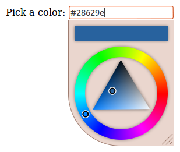
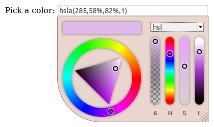
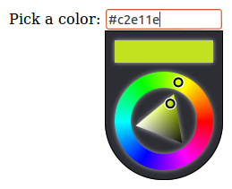
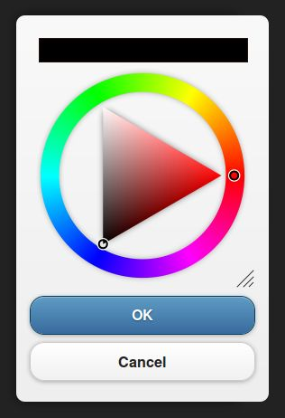

Color Picker Screenshots
-
Basic color picker usage, all default options.

-
Output: RGBA string
Alpha selection: true
Resizable: false
Width: 130px

-
Static mode
Color preview in input element

-
Output: HSLA string
Alpha selection: true
Side panel: true

-
Preview in INPUT element
Width: 260px
Resizable: false
Side panel: true
Side panel mode: CMYK only

-
Dark theme
Resizable: false
Width: 130px

-
Preview in INPUT element
Custom INPUT element styling
Square corners

-
Sample integration with jQuery-mobile dialog.

-
Sample integration with jQuery UI dialog.